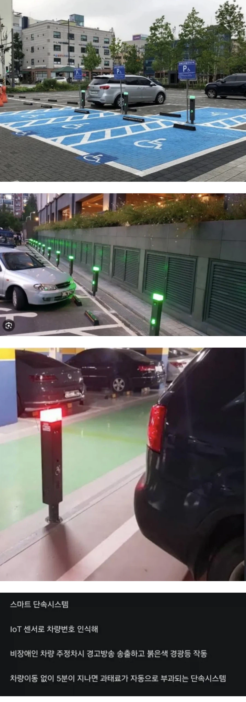

https://bbs.ruliweb.com/best/board/300143/read/76764368

https://bbs.ruliweb.com/best/board/300143/read/76764368

유대인이 타는 차에도 번호판 유로 시작하는거 붙이자!
번호판은 좀 오바긴 한데 어차피 차에 잘 보이게 스티커 붙여서 구분하는거라
스티커는 선택할수있음 좆같으면 안붙이고 장애인 주차장에 안세우면 그만인데 번호판강제는 선택권이 없음
오 몰랐음
근데 스티커니 안 붙이면 그만인게 당연한거네 ㅋㅋㅋ
그거랑은 개념이 다르지. 차별이 아니라 보호와 배려니까.
그렇게 따지면 앞유리 장애인 주차판도 다를게 없는건데
이게 보호자 차량은 동승시에만 장애인차량인거라 애매함
에초에 장애인주차장 너무 많아
예림이 그 번호판 봐봐
딸배헌터 보고 알게된건 비장애인차가 장애인구역에 주차하는 것보다
장애인차량을 비장애인이 몰고다니면서 장애인구역에 주차하는게 많더라고.
ㄹㅇ.. 합리적 추론하자면 거래하는 브로커가 분명히 존재함.
브로커씩이나...
아파서 장애인판정 받은 엄마 아빠명의로 사는게 대부분임.... ㅋㅋ
혜택이 꽤 있음
원 댓글에 '장애인 차량'이라고 쓴 것은 장애인의 명의로 산 차량이란 말이 아니라, 장애인이 발급받은 주차 스티커를 비장애인이 자기 차량에 부착해서 타고 다닌다는 말임. 그래서 딸배헌터와 위반 헌터 등을 구독해서 보니 우연히 길에서 주어서 부착해서 탄다는 비장애인 차주가 많은 것을 보고 추론하자면 장애인 스티커의 거래를 알선하는 브로커가 있다는 댓글을 쓴 거임.
그러니까 비장애인이 장애인인 아빠 명의로 차도 사고 스티커도 받는다는 이야기 아님?
네 말대로 하는 거는 헌터들 영상 보면 그나마 양심 있는 경우임.
그래서 항상 헌터들이 위반 운전자에게 전화해서 '정상적으로 발급된 표지 맞지요?'라고 물어봄.
그럼 백퍼 정상 발급되었다고 하는데, 신고하면 200과태료 처먹음.
그러니깐 정상 발급했지만, 대상자가 사망했거나 유효기간이 지난 경우도 있지만,(과태료 처분)
갑자기 어디서 생겼는지, 적혀있는 차량 넘버를 지워서 자기 차량 넘버를 적거나,
아니면 스티커 자체를 제작해서 사용하는 경우도 많음.
이 경우는 공문서 위조·행사로 경찰에 고발해서 기소유예~벌금 200까지 나왔음.
그정도는 괜찮아
죽은 사람 명의도 쓰는데
그 정도도 안됨. 장애인 차량도 장애인이 탑승할때 장애인 주차장에 주차 할 수 있는거임
원칙적으로는 1인 1장 발급이고 재발급시 기존 스티커 반납이 원칙인데, 분실했다 혹은 차 바꿨다 도르로 한 장 두 장 더 챙겨서 동네 누렁이들까지 다 돌려쓰는 경우도 많고 ㅋㅋㅋ
이거 제주시청에도 있음.. 강남만 하는게 아니야
융통성 있게 하면 되나 했다가 실재 장애인 주차하는거 보고 무조건 장애인석 비워 둬야 겠더라. 처안에서 휠채어를 꺼네더라. 다 신고 한다.
어 나이거 10년전에 라즈베리파이로 이 시스템 만들어서 상받았는데 저작권 권리행사가능?
해봐
특허 신청 했음??
히히 상받았다 좋아하고 말았지..
죽은 부모꺼 쳐달고 주차하는 새끼들 보고 소름이 돋았다
주차하면 한시간마다 5만원씩 부과해라
돈많은 새끼들은 그냥 댄다
근데 요즘 애들 그렇게없다하는데 유아동주차칸도 만들러주면안되나?
장애인 칸을 따로 만드는 이유는 일반 주차장 칸으로 이용이 불가능한 경우가 있어서임.
장애인 주차칸을 보면 옆으로 추가적인 공간이 있는데 그정도의 공간이 있어야 휠체어같은 걸 넣고 꺼낼수 있음.
유아동이 차량 이동하고 할때 그정도의 불편함이 있다면 법에서 만들어줄거임. 하지만 아니면 못하는거지
가족배려주차장이 이케아엔 있더라 졸라넓음 장애인구역만큼인지는 몰루 근데 일반,확장보단 훨넓음
강남 말고도 여기저기 있음
망원시장 공영주차장에도 설치되서 가라치는놈들 없이 깔끔
양심터진새끼들 때문에 사회적비용이 얼마나 드는거야
저거 과태료쎄서 페이백이 더클듯ㅋㅋ
나는 장애인구차구역에 차가 있는 모습자체를 본적이없는데 굳이 세금낭비같기도
뭣?!
5분까지는 대도 된다는거구나!
딸배헌터 보면서 느낀건데 좀 이해가 안되는 부분이 있었음
장애인이세요?
아니요 근데 차는 장애인차량이에요
... 그럼 본인도 장애인이 아니시고 같이 온 일행도 장애인이 아니시라는거죠?
네 근데 차는 장애인차량이에요
....
차가 장애인차량이든 아니든 장애인없이 장애인구역에 차를 주차해도 된다는 그런 생각은 도대체 어디서 나온걸까 그런생각이 들었음 보면서 화가 나는게 아니라 이해가 되지 않았음
걍 상식이하인 인간 언저리들 많음
안면몰수하고 안부끄러워하는척 하는건지 진짜 부끄럼자체가 없는건지 볼때마다 헷갈림
그냥 그런새끼들은 자기가 하는 행동이 스마트 하다고 착각하는 돌대가리들임
갱 장애인 차인지 아닌지 어플로 찍으면 유무만 판단 바로해주면 되지
신고해서 벌금 먹이면 5만원 주고
부작용은 생각해봤어?
맨날 어디가면 장애인 주차구역빼고 주차장 다 차있는경우가 한두번이 아닌데
그런거보면 공간을 왜 저렇게 비효율적으로 써야되나 싶음
차라리 일반주차구역에서도 휠체어 탈수있도록 차를 바꾸든 휠체어를 바꾸든 하면 되지않을까?
이과놈들 갈아넣으면 뭔가 나오지않을까 '해줘'
딸배보면 진짜 죄다 뻔뻔한새끼들뿐임 전수조사 진짜필요함
불법주차 신고한거나 제대로 처리해라
6대 주정차금지구역에 주차한새끼 신고해도 단속미대상이라면서 아무것도 안하면서
밑에서 두번째 SM3 주차해논거 개 파멸적이네 ㅋㅋ
5분?? 할수있다.. 나라면..
비장애인이 뭐고 걍 정상인이지
???: 아니 신고하기 전에 연락을 줘야할 거 아니에요! 여기 직원이에요? 공무원이에요? 아 아니고. 근데 왜 일반인이 신고를 해요? 신고하면 뭐 주머니에 떨어지는 거 있어요?
그냥 장애인
차량을 누가봐도 장애인 차로 알 수 있게
번호판에 장 으로 시작하는거 달고 아니면 신고하게 해